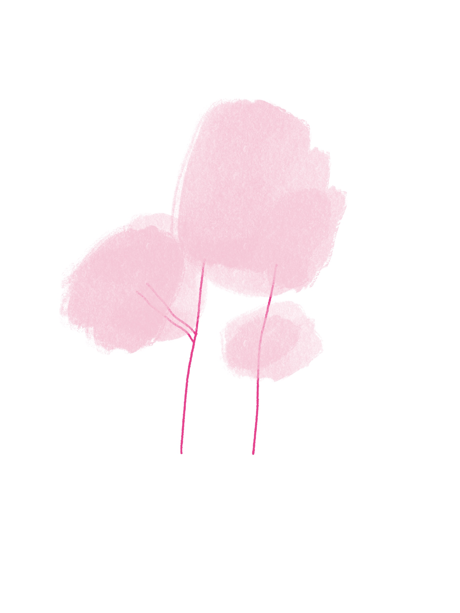
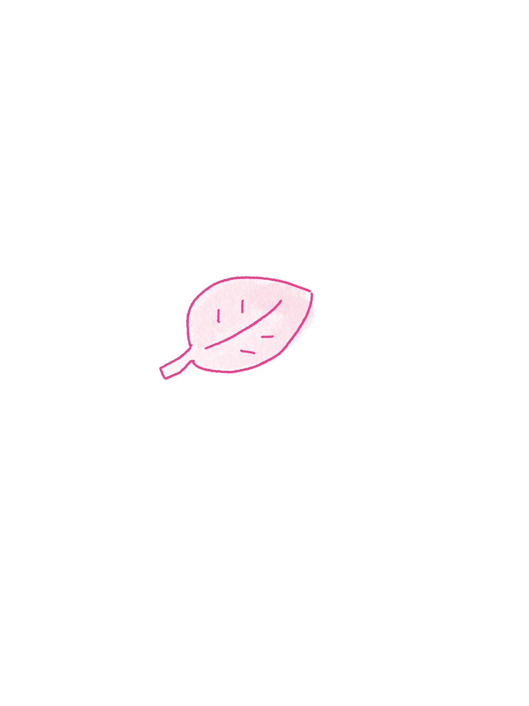

← back to room我的工作是让更多人发现 Cola，也让她以一个更"活着"的样子走进现实世界。
日常会做选题、漫画、文案、视频、内容策划，也会和同事一起认真 battle 审美。最近我们在思考 Cola 的定位，那种感觉像是在展望一个孩子的未来：她会长成什么样，会遇见怎样的朋友，又会怎样陪在人身边。
Cola 对我来说也像一只小流浪猫。刚遇见时也许还不知道她有多特别，但只要愿意靠近，就会慢慢发现她的聪明、可爱和柔软。
在一家初创小公司的感受：没有人叫你宝子，大家互相尊重，自己想探索的东西都可以去试，比较好玩。
